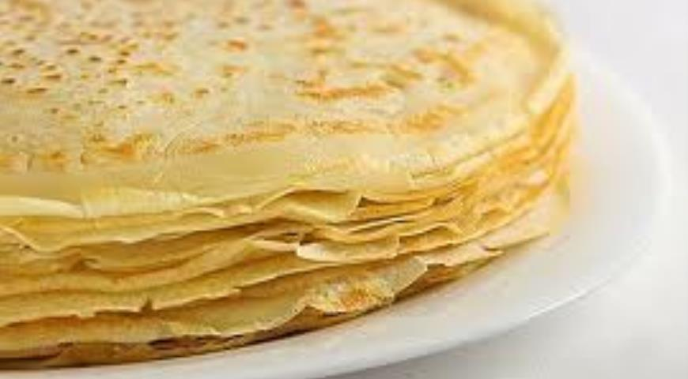

RECIPE!
Ingredients.
- Milk 500 g (ml)
- Eggs 3 pcs.
- Flour 200 g
- Butter (or vegetable) 30 g (2 tbsp. tablespoons)
- Sugar 30 g (2 tbsp)
- Salt 2-3 g (1/2 tsp)
Cooking.
- Wash the eggs well, beat in a bowl for whipping, add sugar and salt. Mix until smooth with a mixer, whisk or just a fork. Here we do not need to beat the eggs in foam, we just need to mix until smooth and completely dissolve the salt and sugar.
- Add a small portion of milk to the egg mass, somewhere between 100-150 ml. We don’t pour all the milk at once, because when adding flour, a thicker dough is easier to mix until smooth. If we pour out all the milk at once, most likely, the dough will remain unstirred lumps of flour, and you will have to filter the dough in the future to get rid of them. So for now, add only a small part of the milk and mix the mass until smooth.
- Sift the flour into a bowl with dough. This is necessary in order to saturate the flour with oxygen and clean it of possible impurities, so I recommend not to skip this point.
- Mix the dough. Now it is quite thick, and should mix to a smooth homogeneous state, without lumps.
- Now add the remaining milk and mix again.
- Pour the cooled melted butter or vegetable oil into the dough. Stir until smooth, the dough will turn out to be quite liquid, about like fat cream.
- If the dough is very thick, add a little water or milk, if it is liquid, add a little flour.
- After we put in the pan and fry, we see for ourselves how much to keep and when to turn the pancakes.
- Put the finished pancakes on a large flat plate, and better cover them with a lid so that they stay hot. If you like more oily pancakes, then grease each pancake with melted butter, it is very convenient to do this with a silicone brush.